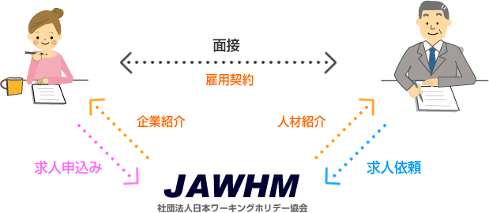

';
$header_obj->fncMenuHead_h1text = '一般社団法人 日本ワーキング・ホリデー協会';
$header_obj->display_header();
?>
';
$header_obj->fncMenuHead_h1text = '一般社団法人 日本ワーキング・ホリデー協会';
$header_obj->display_header();
?>
職業紹介システムについて
正社員及び契約社員での就職・転職を希望される方へ企業をご紹介するシステムです。
丁寧なカウンセリングにより、あなたのスキルやキャリアを把握。あなたにマッチするお仕事をご紹介いたします。
海外体験帰国者の皆様に滞在先で学んできた知識や経験をどのような企業でどのように役立てるのかをアドバイスすることができます。
私たちには知識と経験があります。
就職支援の経験・知識が豊富なスタッフが応募書類の作成方法や面接に関しての注意点などをきめ細かくアドバイスします。
あなたと一緒にあなたの適正を考えて企業へあなたをアピールします。

※求職者への職業紹介に関しての手数料は無料です。 海外体験者の方でなくても、ご利用いただけます。
キャリアナビ職業紹介の流れ
- キャリナビ会員としてウェブ上から求職者登録をします。
- 条件の合う求人に求職申込みをして下さい。求人企業からスカウトメールが届くこともあります。当協会からもすぐに紹介できるお仕事があれば紹介いたします。
- 求職者の登録情報（非個人特定情報）を求人企業に提供し、書類選考していただきます。
- 書類選考に合格した場合、協会より面接日時の連絡をします。
- 求人企業または当協会より採否の通知連絡が届きます。
- 入社日・雇用条件等を調整し、求職者と求人企業の合意の上、雇用契約を締結します。